Tlenowce
Pierwszy z grupy tlenowców, tlen jest szeroko rozpowszechnionym na Ziemi pierwiastkiem, występuje w powietrzu i jest jednym z pierwiastków tworzących wodę.
Tlen posiada dwie formy alotropowe – tworzy cząsteczki \(O_{2}\) i \(O_{3}\) (ozon). Obie formy są w warunkach normalnych gazami.
Tlen cząsteczkowy \(O_{2}\) otrzymywany jest przemysłowo w skutek wykraplania z powietrza oraz elektrolizy wody zawierającej sól niereagującą podczas elektrolizy:
\[H_{2}O \rightarrow H_{2} + \frac{1}{2}O_{2}\]
W laboratorium obecnie tlen otrzymuje się na skutek termicznego rozkładu nadmanganianu:
\[2KMnO_{4} -^{T} \rightarrow K_{2}MnO_{4} + MnO_{2} + O_{2}\]
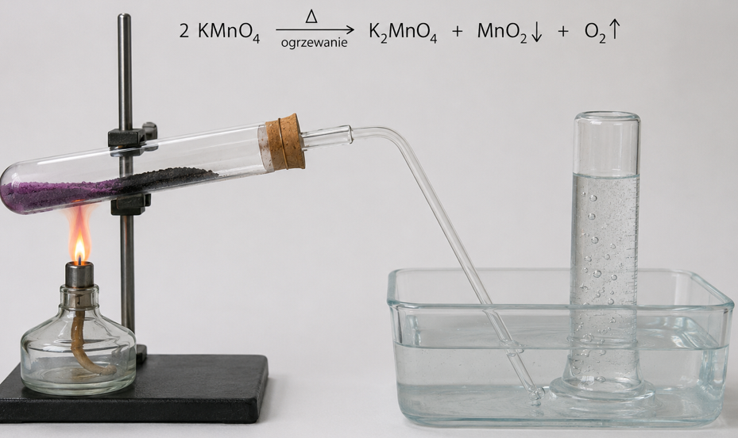
Kiedyś również w skutek termicznego rozkładu tlenku rtęci (II):
\[2HgO -^{T} \rightarrow 2Hg + O_{2}\]
Tą metodęjednak porzucono z uwagi na szkodliwość rtęci
Jako źródło tlenu można wykorzystać rozkład wody utlenionej:
\[H_{2}O_{2} \rightarrow H_{2}O + \frac{1}{2}O_{2}\]
Tlen cząsteczkowy jest dwurodnikiem i może występować w formie singletowej (wzbudzona , brak niesparowanych elektronów) i trypletowej (dwa niesparowane elektrony, forma podstawowa). Formy te posiadają inaczej rozmieszczone elektrony
Ozon powstaje z tlenu cząsteczkowego w skutek wysokonapięciowych wyładowań np. Podczas burzy albo w ozonolizatorach:
\[3O_{2} -^{U} \rightarrow 2O_{3}\]
Ozon jest silnie reaktywnym związkiem o właściwościach utleniających
Struktura elektronowa wygląda następująco:
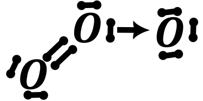
Reaktywność tlenu i ozonu.
Spalanie pierwiastków w tlenie prowadzi do tlenków, nadtlenków oraz ponadtlenków. W większości reakcji w tlenie otrzymuje się tlenek:
\[S + O_{2} \rightarrow SO_{2}\]
\[C + O_{2} \rightarrow CO_{2}\]
\[4Li + O_{2} \rightarrow 2Li_{2}O\]
Wyjątkiem są pierwiastki bloku s:
| \(4Li + O_{2} \rightarrow 2Li_{2}O\) (tlenek) | \(2Be + O_{2} \rightarrow 2BeO\) (tlenek) |
|---|---|
| \(2Na + O_{2} \rightarrow Na_{2}O_{2}\) (nadtlenek) | \(2Mg + O_{2} \rightarrow 2MgO\) (tlenek) |
| \(K + O_{2} \rightarrow KO_{2}\) (ponadtlenek) | \(2Ca + O_{2} \rightarrow 2CaO\) (tlenek) |
| \(Rb + O_{2} \rightarrow RbO_{2}\) (ponadtlenek) | \(2Sr + O_{2} \rightarrow 2SrO\) (tlenek) |
| \(Cs + O_{2} \rightarrow CsO_{2}\) (ponadtlenek) | \(Ba + O_{2} \rightarrow BaO_{2}\) (nadtlenek) |
Spalanie metali aktywnych w ozonie prowadzi do ozonków – związków o budowie jonowej zawierających kation metalu i anion \(O_{3}^{-}\)
\[Na + O_{3} \rightarrow NaO_{3}\]
Reaktywność tlenków, nadtlenków i ponadtlenków jest omówiona litowcach/ berylowcach
Wzór tlenku na maksymalnym stopniu utlenienia można wyprowadzić metodą krzyżową:
| I | II | 3/13 | 4/14 | 5/15 | 6/16 | 7/17 | 8/18 |
|---|---|---|---|---|---|---|---|
| \[A_{2}O\] | \[AO\] | \[A_{2}O_{3}\] | \[AO_{2}\] | \[A_{2}O_{5}\] | \[AO_{3}\] | \[A_{2}O_{7}\] | \[AO_{4}\] |
Tlenki mają różne charaktery (kwasowe, zasadowe, amfoteryczne i obojętne). Na maturę potrzebujemy znać charakter tlenków dla bloków s, p oraz 1. Okresu d.
Układ jest tu https://biomist.pl/wp-content/uploads/2020/06/ChTPLBpoprawka.png
fiszki są tu: https://quizlet.com/pl/656437897/chemia-tlenki-blok-s-p-pierwszy-okres-d-ag-au-cd-hg-flash-cards/?x=1qqt
omówienie reaktywności tlenków w zależności od charakteru tego tlenku znajduje się w opracowaniu z chemii nieorganicznej:
|
Tlenek zasadowy ( Z O) |
Tlenek kwasowy ( K O) |
Tlenek amfoteryczny ( A O) |
|
|---|---|---|---|
| Woda | Wodorotlenek Z (OH) m |
Kwas tlenowy H K O n |
X |
| Tlenek zasadowy ( Z O) | X |
Sól typu ZK O n |
Sól typu ZA O n |
| Tlenek kwasowy ( K O) |
Sól typu ZK O n |
X |
Sól typu AK O n |
|
Tlenek amfoteryczny ( A O) |
Sól typu ZA O n |
Sól typu AK O n |
X |
| Kwas HR |
Sól typu ZR + H 2 O |
X |
Sól typu AR +H 2 O |
|
Zasada - Wodorotlenki I i II grupy Z(OH) n |
X |
Sól typu ZK O n + H 2 O |
Związek kompleksowy typu ZA (OH) m |
| Wodorotlenki amfoteryczne A (OH) n |
Związek kompleksowy typu ZA (OH) m |
Sól typu AK O n + H 2 O |
X |
Oczywiście z informacją dodatkową mogą wystąpić inne reakcje dla tlenków.
Tlen tworzy dwa wodorki -wodę \(H_{2}O\) oraz wodę utlenioną \(H_{2}O_{2}\) . Oba wodorki tworzą silne wiązania wodorowe. Mieszanina \(H_{2}\) i \(O_{2}\) nazywana jest mieszanina piorunująca, z uwagi na silnie energetyczną i wybuchową reakcje między tymi gazami.
Wzór elektronowy oraz przestrzenny wody utlenionej znajduje się poniżej:
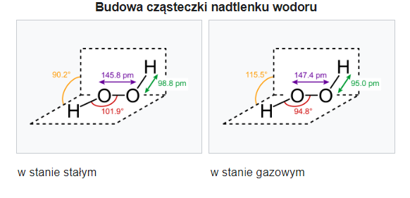
Metody otrzymywania wody utlenionej:
Stara metoda technologiczna polegała na wykorzystaniu nadtlenku baru do syntezy wody utlenionej:
\[Ba + O_{2} \rightarrow BaO_{2}\]
\[BaO_{2} + H_{2}SO_{4} \rightarrow BaSO_{4} \downarrow + H_{2}O_{2}\]
Obecnie używana metoda to metoda antrachinonowa
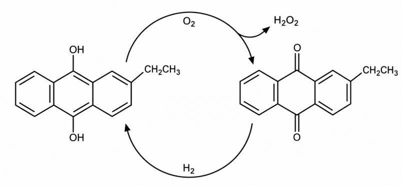
Etap pierwszy - utlenianie
\[C_{16}H_{14}O_{2} + O_{2} \rightarrow C_{16}H_{12}O_{2} + H_{2}O_{2}\]
Etap drugi to redukcja tegoż powstałego związku organicznego i wykorzystać do dalszej reakcji:
\[C_{16}H_{12}O_{2} + H_{2} \rightarrow C_{16}H_{14}O_{2}\]
Nadtlenek wodoru można też otrzymać metodą elektrolityczną z \(H_{2}SO_{4}\) lub \(NH_{4}HSO_{4}\) :Najpierw prowadzimy reakcje elektrolizy \(H_{2}SO_{4}\) :
\[2H_{2}SO_{4} \rightarrow H_{2}S_{2}O_{8} + H_{2} \uparrow\]
\[2NH_{4}HSO_{4} \rightarrow \left( NH_{4} \right)_{2}S_{2}O_{8} + H_{2} \uparrow\]
W obu przypadkach \(H_{2}O_{2}\) uzyskuje się następnie przez hydrolizę:
\[S_{2}O_{8}^{2 -} + 2H_{2}O \rightarrow 2HSO_{4}^{-} + H_{2}O_{2}\]
Nadtlenek wodoru jest dostępny handlowo, roztwór 30% nazywany jest perhydrol, są dostępne większe stężenia tegoż związku, ale praca z nimi jest skrajnie niebezpieczna. Roztwory takie potrafią wybuchnąć, oraz z uwagi na silnie właściwości utleniające potrafią robić potworne oparzenia.
Nadtlenek wodoru jest silniejszym kwasem niż woda
\[OH^{-} + H_{2}O_{2} \rightarrow H_{2}O + HOO^{-}\]
Rozkłada on się, powoli bez udziału katalizatora na tlen i wodę
\[2H_{2}O_{2} \rightarrow 2H_{2}O + O_{2}\]
Proces ten bardzo przyśpieszany jest przez:
- związki metali bloku d (i same metale też)
- temperaturę lub promieniowanie UV
Roztwory wody utlenionej mają słaby odczyn kwasowy z uwagi na zachodzącą reakcję proteolizy:
\[H_{2}O + H_{2}O_{2} \rightleftarrows H_{3}O^{+} + HO_{2}^{-}\]
Woda utleniona używana jest jako jeden z składników paliwa rakietowego.
Woda utleniona jak sama nazwa wskazuje ma właściwości utleniające i np. może utlenić jodki do jodu:
\[2I^{-} + H_{2}O_{2} \rightarrow I_{2} + 2OH^{-}\]
W środowisku kwasowym analogicznie:
\[2H^{+} + 2I^{-} + H_{2}O_{2} \rightarrow I_{2} + 2H_{2}O\]
Może również utlenić żelazo (II) do żelaza (III):
\[2Fe(OH)_{2} + H_{2}O_{2} \rightarrow 2Fe(OH)_{3}\]
Oraz chrom w środowisku zasadowym:
\[Cr(OH)_{4}^{-} + H_{2}O_{2} \rightarrow CrO_{4}^{2 -}\]
Oczywiście reakcja ta wymaga zbilansowania.
\[2Cr(OH)_{4}^{-} + 3H_{2}O_{2} + 2OH^{-} \rightarrow 2CrO_{4}^{2 -} + 8H_{2}O\]
Woda utleniona jest amfoterem redoks – wykazuje właściwości utleniające, ale też może być reduktorem wobec silnych utleniaczy takich jak nadmanganian czy dwuchromian w środowisku kwaśnym. Z wody utlenionej powstaje tlen:
\[MnO_{4}^{-} + H_{2}O_{2} \rightarrow MnO_{2} + O_{2}\]
Po zbilansowaniu:
\[2MnO_{4}^{-} + 5H_{2}O_{2} + 2H^{+} \rightarrow 2MnO_{2} + 5O_{2} + 6H_{2}O\]
Istnieje również wodorek \(H_{2}O_{3}\) jednak ten związek traktujemy jako ciekawostkę.
Siarka jest występuje w postaci minerału w przyrodzie, również jako czysta siarka tzw. Siarka kopalna.
Siarka występuje najczęściej tworząc pierścienie \(S_{8}\) i \(S_{6}\) .
Związki siarki z wodorem:
Siarkowodór
\(H_{2}S\) jest gazem, rozpuszczalnym w wodzie, jest słabym kwasem. Siarkowodór ma zapach zgniłych jaj. Otrzymywany jest przez reakcję wyparcia słabego kwasu \(H_{2}S\) mocnymi:
\[Na_{2}S + 2HCl \rightarrow 2NaCl + H_{2}S\]
Siarkowodór można też otrzymać przez ogrzewania parafiny lub innego dużego węglowodoru i siarki.
\[C_{x}H_{y} + S \rightarrow H_{2}S + C\]
Siarkowodór ma silne toksyczne działanie, wiąże się on trwale z hemoglobiną powodując zaburzenie transportu tlenu i tym samym uduszenie.
Charakterystyczną cechą siarki jest silna chęć do tworzenia wiązań S-S (tzw. mostków disiarczowe). Najprostszą metodą otrzymywania jest ogrzewanie siarki w roztworze siarczku sodu:
\[Na_{2}S + S_{x} \rightarrow Na_{2}S_{x + 1}\]
Powstają wtedy liniowe aniony o strukturze: \(\text{ }^{-}S - S - S - S - S^{-}\)
Mostki siarczkowe są tak popularne, że występują nawet w minerałach, np. w pirycie: \(FeS_{2}\) , który zbudowany jest z kationów żelaza (II) \(Fe^{2 +}\) i anionu dwusiarczkowego \(S_{2}^{2 -}\) .
Siarka reaguje z halogenami dając pochodne halogenowe:
\[S + Cl_{2} \rightarrow SCl_{2}\]
Znane też są związki tego typu zawierające łańcuchy siarkowe, jak \(S_{5}Cl_{2}\) .
Siarka w reakcji z fluorem może dawać również \(SF_{4}\ i\ SF_{6}\)
\[S + 2F_{2} \rightarrow SF_{4}\]
Różnica w produktach jest spowodowana silniejszymi właściwościami utleniającymi fluoru niż chloru. Siarka w związkach przyjmuje również wyższe hybrydyzacje, wykorzystując orbitale d:
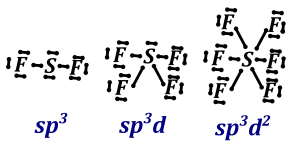
Ogrzewanie związków tego typu z anionami wielosiarczkowymi powoduje cyklizację do siarki z wydzieleniem soli:
\[S_{y}Cl_{2} + Na_{2}S_{x} \rightarrow S_{y + x} + 2NaCl\]
Spalenie siarki w nadmiarze tlenu zawsze prowadzi do \(SO_{2}\) :
\[S + O_{2} \rightarrow SO_{2}\]
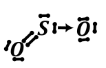
Natomiast dalsze utlenienie \(SO_{2}\) do \(SO_{3}\) wymaga obecności katalizatora ( \(V_{2}O_{5}\) lub \(NO_{2}\) )
\[2SO_{2} + O_{2} -^{NO_{2}} \rightarrow 2SO_{3}\]
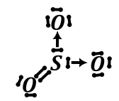
Tlenek siarki (IV) jest warunkach normalnych gazem o charakterystycznym zapachu – śmierdzi jak odpalana zapałka. Związek ten jest względnie łatwo utlenić utleniaczami do anionu \(SO_{4}^{2 -}\)
\[5SO_{2} + 2MnO_{4}^{-} + 6H^{+} \rightarrow 5SO_{4}^{2 -} + 2Mn^{2 +} + 3H_{2}O\]
Reaguje z zasadami dając sole kwasu siarkowego (IV)
\[2NaOH + SO_{2} \rightarrow Na_{2}SO_{3} + H_{2}O\ \]
Odpowiedni kwas siarkowy (IV) jest nietrwały i po zakwaszeniu roztworu rozkłada się spowrotem na wodę i \(SO_{2}\)
\[H_{2}O + SO_{2} \rightleftarrows H_{2}SO_{3}\]
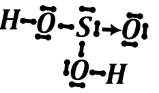
Co jest przyczyną kwaśnych deszczy.
Reaguje również z halogenami taki jak chlor czy brom dając chlorek sulfurylu \(SO_{2}Cl_{2}\) oraz bromek sulfurylu
\[Cl_{2} + SO_{2} \rightarrow SO_{2}Cl_{2}\]
który jest chlorkiem kwasem wywodzącym się z kwasu siarkowego (VI)
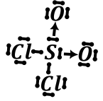
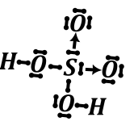
Kwas siarkowy (IV) i jego sole jest łatwo utlenić do kwasu siarkowego (VI) silnymi utleniaczami, takimi jak dwuchromian czy nadmanganian potasu.
Drugi popularny tlenek siarki czyli \(SO_{3}\) jest również tlenkiem kwasowym, kwas wywodzący się z niego to \(H_{2}SO_{4}\) . W warunkach normalnych na potrzeby matury występuje jako gaz (ale nie jest to do końca jest to ciało stałe – o innej budowie niż opisują w szkole). Poniżej przedstawiono wzory Lewisa oraz modele tych związków:
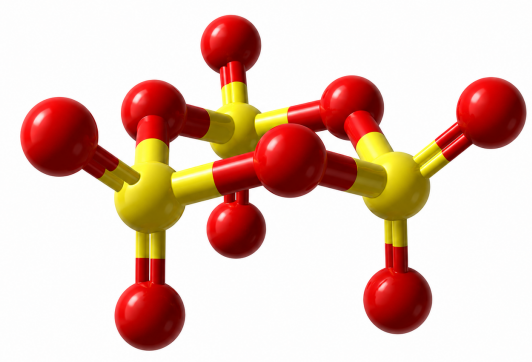
Kwas, który powstaje z tego tlenku po wprowadzeniu do wody \(H_{2}SO_{4}\) jest silnym kwasem dwuprotonowym. Związek ten poza roztworami wodnymi \(H_{2}SO_{4}\) tworzy również roztwory \(SO_{3}\) w \(H_{2}SO_{4}\) w wodzie, zwane oleum. Kwas ten w niskich stężeniach nie ma właściwości utleniających, wydziela wodór w reakcji z metalami, natomiast w wyższych stężeniach ma właściwości utleniające – wydziela się wówczas \(SO_{2}\) .
Istnieją również inne kwasy tlenowe siarki zawierające wiązanie \(O - O\) . Przykładami są kwas Caro \(H_{2}SO_{5}\) oraz kwas nadtlenodisiarkowy \(H_{2}S_{2}O_{8}\)
\(H_{2}SO_{5}\) kwas Caro albo pirania powstaje w skutek reakcji wody utlenionej z kwasem siarkowym:
\[H_{2}SO_{4} + H_{2}O_{2} \rightarrow H_{2}SO_{5} + H_{2}O\]
W związku tym występuje mostek tlenowy –O-O-. Struktura Lewisa tego związku wygląda następująco:
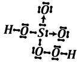
Anion drugiego z wymienionych kwasów \(S_{2}O_{8}^{2 -}\) otrzymujemy na skutek elektrolizy przy użyciu wysokiej gęstości prądowej roztworu zawierającego jony \(SO_{4}^{2 -}\) :
\[2SO_{4}^{2 -} \rightarrow S_{2}O_{8}^{2 -} + 2e^{-}\]
W anionie ty też występuje mostek tlenowy –O-O-
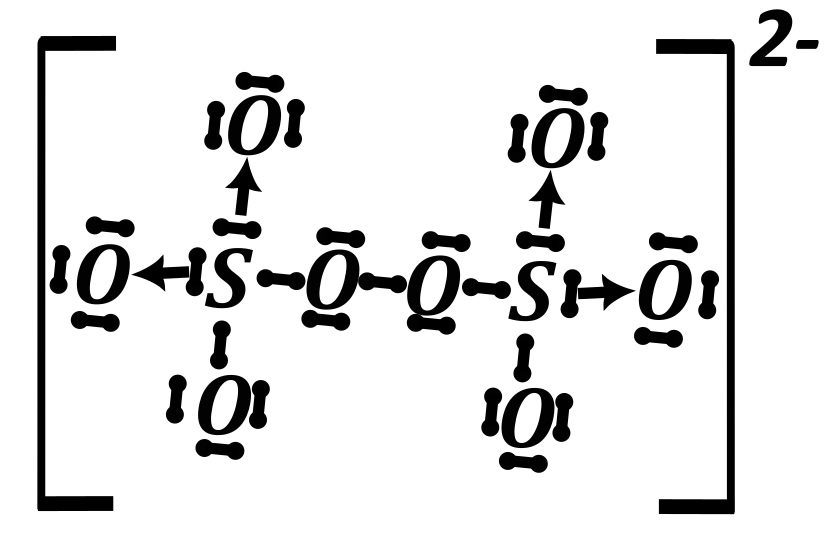
Podczas gotowania roztworu soli kwasu siarkowego (IV) z siarką tworzy sie sól kwasu tiosiarkowego
\[Na_{2}SO_{3} + S \rightarrow Na_{2}S_{2}O_{3}\]
Anion tego kwasu ma strukturę analogiczną jak anion kwasu siarkowego (VI), zamiast jednego atomu tlenu występuje atom siarki. Strukturę Lewisa tego związku można zapisać jako:
anion tiosiarczanowy:
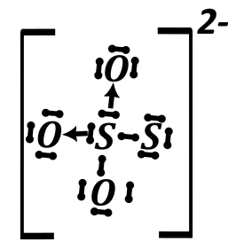
Aniony tego kwasu są stabilne w wodzie i ciele stałym, natomiast odpowiedni kwas \(H_{2}S_{2}O_{3}\) , jest nietrwały zakwaszenie soli tego kwasu powoduje ich natychmiastowy rozkład z utworzeniem \(S\) , \(SO_{4}^{2 -}\) i \(SO_{2}\) :
\[Na_{2}S_{2}O_{3} + 2HCl \rightarrow 2NaCl + \left\lbrack H_{2}S_{2}O_{3} \right\rbrack\]
\[\left\lbrack H_{2}S_{2}O_{3} \right\rbrack \rightarrow S + SO_{4}^{2 -} + SO_{2}\]
W tym wypadku mamy trzy półreakcje redoks, proporcja produktów zależy od pH środowiska.
Aniony tego kwasu używane są do neutralizacji silnych utleniaczy takich jak chlor czy brom
\[Cl_{2} + S_{2}O_{3}^{2 -} \rightarrow Cl^{-} + SO_{4}^{2 - \ }\]
Reakcja z jodem prowadzi do innego produktu – \(S_{4}O_{6}^{2 -}\) . Tworzący się anion powstaje przez utworzenie mostków disiarczkowych:
\[2S_{2}O_{3}^{2 -} + I_{2} \rightarrow S_{4}O_{6}^{2 -} + 2\ I^{-}\]
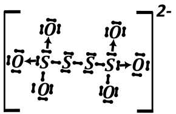
Reakcja ta powyżej jest podstawą jodometrii, jednej z metod miareczkowania. Jako analit stosujemy jod, titrantem jest roztwór tiosiarczanu potasu. Wskaźnikiem jest roztwór skrobi, barwi on roztwór w obecności niewielkich ilości jodu na kolor niebieski. Na skutek wkraplania roztworu tiosiarczanu do jodu, zmniejsza się jego ilość, aż do całkowitego przereagowania i tym samym odbarwienia roztworu.
Selen ma bardzo zbliżoną chemie do siarki.
{kind=link}